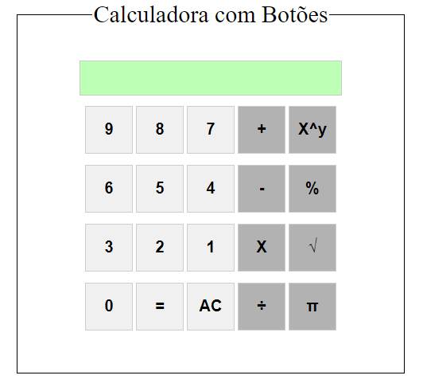

About me
Olá, meu nome é Marcos Antonio da Silva, atualmente tenho 17 anos e nasci em São Paulo, Brasil. Estou cursando meu último ano em Desenvolvimentos de Sistemas em uma Etec e pretendo continuar na área no futuro.
Sou uma pessoa muito introvertida mas que me esforço todo dia para melhorar e aprender cada vez mais como ser humano. Meus hobbie favorito é jogar algum jogo FPS ou assistir live de meus streamers favoritos, mas também gosto de fazer outras coisas como, por exemplo, estudar ou até mesmo programar.
Formações
- Ensino Técino Superior - Etec Jardim Ângela (2022-2024)
- Ensino Fundamental I e II - E.E.Professora Leila Sabino (2013-2021)
Minhas skills
Desenvolvimento
Aprendi a programar recentemente, em 2022, mas tenho uma boa base por conta da escola. Tenho conhecimento mais avançado no Front-End (HTML e CSS) e um pouco no Back-End (MySQL e C#). Pretendo fazer mais cursos e faculdades para ampliar meu conhecimento e me tornar um ótimo Desenvolvedor Full-Stack.
Foco e Dedicação
Por não possuir nenhuma experiência profissional e pouco conhecimento na área, me dedico a cada dia para aprender mais sobre Programação Front e Back End, aprender boas praticas profissionais e me tornar uma pessoa mais agradável em ambiente de trabalho.
Meus trabalhos
Calculadora com HTML, CSS e JS
Um site que meu professor pediu para fazer utilizando as linguagens citadas anteriormente. É um site simples, que pretendo mexer no futuro para melhorar a responsividade e design. Clique na imagem para acessar o site.
Fale comigo
Gostou do meu portfólio e de meus trabalhos ou tem algum feedback interessante? Entre em contato comigo através de meu email marcosant2170@gmail.com para dar seu feedback.